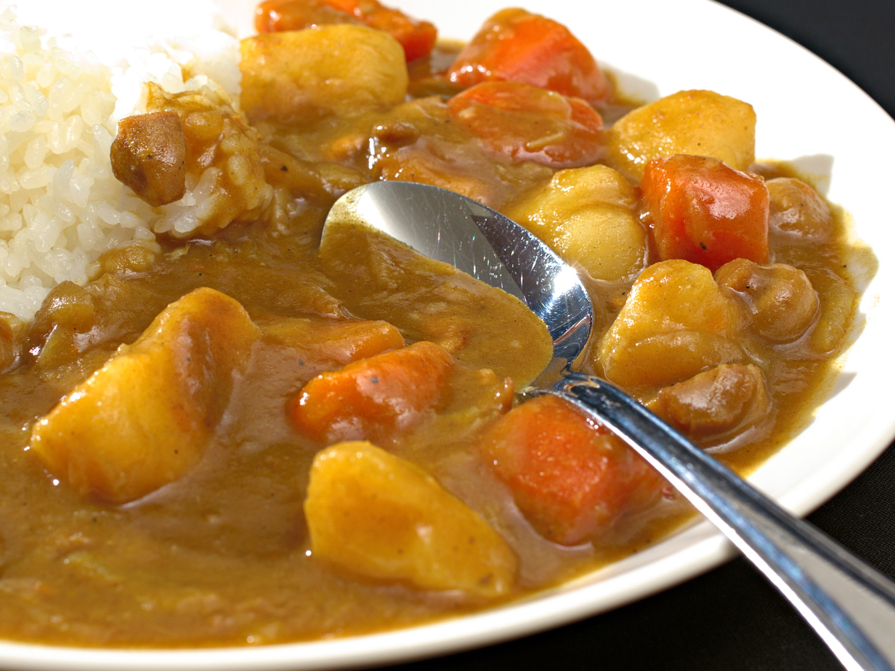

Home
Japanese Curry

Description
Japanese curry, or kare raisu, is a unique and popular dish in Japan that is a variation of the Western-style stew. It's characterized by a deep brown color, a slightly sweet and mild flavor, and a thick, gravy-like consistency. It's often served over rice and can be topped with items like fried chicken or pork cutlets.
Ingredients
- 1 box S&B Golden Curry Mix
- 2 lbs beef (or chicken, lamb, shrimp)
- 2 lbs minced onion
- 9 oz chopped carrots
- 10 oz chopped potatoes
- 2 tbsp cooking oil
- 1200 ml water
Steps
- Stir-fry meat and vegetables with oil in a large skillet on medium heat for approx. 5 min.
- Add water and bring to boil. Reduce heat, cover and simmer until ingredients are tender, approx. 15min.
- Turn the heat off, break S&B Golden Curry Sauce Mix into pieces and add them to the skillet. Stir until sauce mixes are completely melted. Simmer approx. 5 min., stirring constantly.
- Serve hot over rice or noodles.